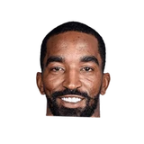
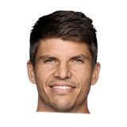
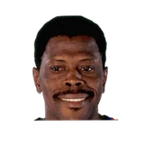

JR Smith:
“I did not grow up a Knicks fan. I hated the Knicks. I did not like Patrick Ewing. I did not like John Starks. I didn't like anything about the Knicks. I was a Bulls fan. I was a Michael Jordan fan. Michael Jordan is my GOAT.”

24 quotes from JR Smith about 17 other people around the NBA, newest first. Each one links to its original source.
JR Smith:
“I did not grow up a Knicks fan. I hated the Knicks. I did not like Patrick Ewing. I did not like John Starks. I didn't like anything about the Knicks. I was a Bulls fan. I was a Michael Jordan fan. Michael Jordan is my GOAT.”
“Even if you think about the accolades, he could win MVP every single year. But when they go up there to talk about the conversations, he's always the third guy. It's either Giannis or James. Or Russ or James. Or this or that person. And 'oh you could always throw LeBron in there, look at his numbers.'People get so bored with seeing greatness. It's disrespectful to an extent. How can you say he's the best player in the world [every year] and not give this man MVP? I've never understood that. He can go to any team and make a championship run.”
“I think he’s handling it well. You know he’s in a tough spot. I’ve played for a few coaches, and one thing about Coach Woodson, he puts everything on himself before anybody. He takes the blame, he takes all the heat and he doesn’t mind it; that’s what he wants. That’s what he expects. “I think we as players need to start taking some of the heat, because he can’t play for us, he can’t go out there and grab 10 to 12 rebounds or shoot the ball. That’s our job. So we’ve got to stand up and admit when we’re wrong and not playing well, and take the heat.”
What NBA players and coaches have said about JR Smith →

JR Smith on Kyle Korver2 quotes
Patrick Ewing1 quoteJR Smith:
“Anybody knows who Byron Scott as a coach, probably second to none on you're going to be in shape where they're going to make you quit. And we did this drill that lasted, first 35 minutes of practice, and it was all running. And I literally thought to myself for sure I should have went to college.”
JR Smith:
“I did not grow up a Knicks fan. I hated the Knicks. I did not like Patrick Ewing. I did not like John Starks. I didn't like anything about the Knicks. I was a Bulls fan. I was a Michael Jordan fan. Michael Jordan is my GOAT.”
“I got a lot of great feedback. Chris Paul was telling me the guys were talking about it in the locker room and guys were really looking forward to it, looking for my scores. So, I got to take care of business so that when I see them, it won’t be too much backlash.”
“Chris Paul was telling me guys were talking about it in the locker room. Guys are really looking for my scores, so I got to take care of business so when I see them it ain't going to be too much backlash.”
“Even if you think about the accolades, he could win MVP every single year. But when they go up there to talk about the conversations, he's always the third guy. It's either Giannis or James. Or Russ or James. Or this or that person. And 'oh you could always throw LeBron in there, look at his numbers.'People get so bored with seeing greatness. It's disrespectful to an extent. How can you say he's the best player in the world [every year] and not give this man MVP? I've never understood that. He can go to any team and make a championship run.”
Dave McMenamin:JR Smith:
“I mean, especially as a 2 guard, if you can model your career after anybody at that wing position, it would be a Kobe person. The career, the accolades, the championships and everything else. I look up to him just as much as I look up to Jordan”
“So I’m like, ‘Alright, bet. I’m about to dribble it back out then. Game is about to be over.’“I look at LeBron, LeBron is pointing like this. I’m like, ‘What the f--k is he pointing at?’”
However, Smith isn’t too keen on the idea of going to Minnesota, as he recently told the group of guys with whom he was playing NBA 2K19 as they were getting ready for a game.
“They trying to do a trade for Jimmy Butler? I ain’t going to Minnesota,”
J.R. Smith on Korver:
“He has a tremendous checklist that he goes through when he shoots. Fortunately, I don’t think as much. I just try to get it up whenever I can. He shoots the same way every time no matter what, and for me, that’s hard. I take wild shots and stuff.”
JR Smith told ESPN of his benching.
“(Tyronn Lue) sent me a text (Monday) and I told him, 'No problem.'I didn't know that it was a 'talk.' ... I'm not upset about it. I just wish there would have been more dialogue, I guess.”
“Stephen A. said that me wearing my hoodie on the bench makes white people remember Trayvon Martin. For one, they should remember him. Everybody should remember him. But for two, I’ve always worn a hoodie. I used to wear my hoodie in New York. To bring race into that and for me, out of all people, why would you bring me into it? I have nothing to do with it,”
Smith:
“Just creates unwanted drama and unnecessary drama. ... Say Anthony Davis gets picked last on whichever team. How do you think he feels about that? As an All-Star, you made the All-Star team, you’re pretty much taking the joy from it away and now you’re making it a problem between me and such and such person because you picked me last.”
“I'm not going to sit here and get into a 'blank' measuring contest with Dwyane Wade,”
JR Smith:
“LeBron's been a jerk. He calls me at 6:30 in the morning to ask what I'm doing. Obviously I'm sleeping.”
“He's probably the best one-on-one player already. And Kyle [Korver] would be a really good three-on-three player because he moves without the ball and he can catch-and-shoot the [expletive] out of it.”
J.R. Smith on LeBron's beer grabbing moment:
“Ithought it was hilarious, but then I thought about how it would look if I did it.”
“You've got my agent's number so you all can call him. Rich Paul. You all know what it is. Klutch. You dig?”
Given that the players now vote for their own MVP – James Harden won MVP as voted on by the NBA players association last season - Cavs two-way stopper JR Smith was asked who he would vote for.
“Other than LeBron, I don’t really know who else to vote for,”
Rod Boone:JR Smith on chatting it up with Carmelo during #Cavs run:
“I think I talk to him probably more now than I did when I was playing with him.”
Diamond Leung:J.R. Smith on Warriors guarding LeBron James:
“Best of luck to 'em. I hope he do double, so I get open shots.”
“It used to be no question. It was a landslide. It was Jordan. Now, you have to consider my boy.”
Dave McMenamin:J.R. Smith on LeBron:
“Who? The real MVP? There's a lot of speculation about who should get the award, but we all know who the real MVP is”
“I think he’s handling it well. You know he’s in a tough spot. I’ve played for a few coaches, and one thing about Coach Woodson, he puts everything on himself before anybody. He takes the blame, he takes all the heat and he doesn’t mind it; that’s what he wants. That’s what he expects. “I think we as players need to start taking some of the heat, because he can’t play for us, he can’t go out there and grab 10 to 12 rebounds or shoot the ball. That’s our job. So we’ve got to stand up and admit when we’re wrong and not playing well, and take the heat.”
Ian Begley:J.R. Smith on Paul Pierce saying the Nets will run NY:
“Just know that his words have consequences & he's going to have to pay for them.”